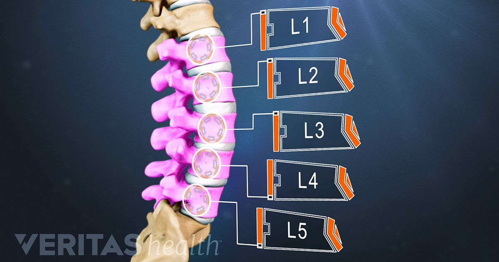

Yuri Alberto
Atacante do corinthians
Ver no TransfermarktAtacante do Corinthians sofreu uma pancada na região lombar e só deve voltar aos gramados em dois meses. Entenda tratamento e tempo de recuperação

O atacante Yuri será desfalque do Corinthians nas próximas semanas por conta de uma lesão na coluna. Após sentir dores na região lombar durante a partida contra o Atlético-MG, no último sábado, exames de imagem detectaram uma fratura no processo transverso da vértebra L1, à direita. O jogador está imobilizado e já iniciou o processo de reabilitação. A seguir, entenda o que é esse tipo de lesão, como é feito o tratamento e qual o tempo estimado de recuperação.
L1 é a primeira vértebra da coluna, na região lombar, e o processo transverso é uma projeção óssea lateral que serve como ponto de fixação para músculos e ligamentos. — O atleta está imobilizado, medicado, estável e com acompanhamento do departamento médico do Corinthians — informou o clube, por meio de nota.

O lance em que o jogador se machucou é incerto, mas possivelmente ocorreu durante uma disputa de bola com o volante Patrick , do Atlético-MG, nos minutos finais do segundo tempo da partida. Não houve falta na jogada, muito menos um contato mais forte. O atacante começou o duelo com o Atlético-MG no banco de reservas, entrou aos 19 minutos do segundo tempo e permaneceu no gramado da Arena MRV por meia hora.

Fases de tratamento estimadas por Adriano Leonardi: 0 a 2 semanas: repouso relativo, controle de dor e inflamação; 2 a 4 semanas: início da fisioterapia com mobilizações leves, fortalecimento do core e exercícios isométricos; 4 a 6 semanas: progressão para atividades funcionais, treino de estabilidade e resistência; 6 a 8 semanas: retorno gradual aos treinos com bola, sem contato; Após 8 semanas: retorno completo, se exames clínicos e funcionais estiverem normais. Para que esse prazo seja cumprido, é preciso que: Não haja instabilidade vertebral; Não existam lesões neurológicas associadas; O quadro álgico esteja totalmente resolvido; O atleta recupere plenamente a mobilidade da coluna, força muscular paravertebral e condicionamento físico. É preciso destacar a importância de realizar o tratamento adequado e seguir todas as etapas de forma correta. O retorno precoce ao esporte pode levar a recidiva da fratura (especialmente se houver contato direto ou cargas excessivas), síndrome miofascial lombar por sobrecarga da musculatura paravertebral conservatória, instabilidade funcional da coluna (acarretando em lesões musculares ou hérnias discais) e dor crônica e impacto no desempenho esportivo.